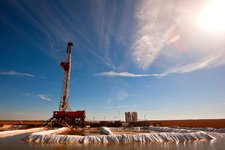

By KARL RUSSELL
The depressed price of oil has been wreaking havoc on
the industry to the point of making it unprofitable to drill
for oil in the United States and even undermining countries
whose economies are heavily dependent on exporting
oil, like Russia, Venezuela and Nigeria. Related Article
After rising earlier this year, crude is back down to about $43 a barrel. Prices have fallen more than 60 percent in nearly two years. Prices tend to fluctuate in response to geopolitical and economic turmoil. Worries about China’s economic health has been one recent factor weighing on oil.
$180
a barrel
The price of oil
150
Financial
crisis
2008-09
Brent crude futures contracts,
adjusted for inflation
120
90
U.S.-led
invasion
of Iraq
2003
60
30
JULY 28:
$43
Sept. 11,
2001
0
’00
’02
’04
’06
’08
’10
’12
’14
’16
The low price of oil has cut the profits of United States oil companies, forcing many into bankruptcy. And a devastating forest fire in the oil sands region of Canada forced many companies to slow or stop altogether. For the first time in years North American production decreased, as more than 250,000 oil and gas workers have lost their jobs worldwide — over half of whom worked in the United States.
+80
%
+70
United States
Change in oil production
+60
Oil production
declined in
North America
Percentage change since 2006 among the top crude oil producers, except Iraq.
+50
+40
+30
Canada
+20
Saudi Arabia
Russia
+10
China
0
–10
2006
2016
(second quarter)
United States production surged in recent years with the shale boom, while major producers like Saudi Arabia and Russia have been pumping at high levels. This year, a balance has returned, but because demand is weak, it will take a while to work through the excess.
100
million barrels a day
95
Total world oil:
Supply
90
Demand
Supply increased more than demand recently, but it has decreased since
85
80
Demand fell during the
financial crisis and
production adjusted
75
Quarterly
70
’00
’02
’04
’06
’08
’10
’12
’14
’16
Balance of supply and demand
Latest
imbalance
million barrels a day
+2
+1
0
–1
–2
’00
’02
’04
’06
’08
’10
’12
’14
’16
The difference between supply and demand, including variations in what
producers and users hold in reserve, known as stock changes, plotted quarterly
Advertisement